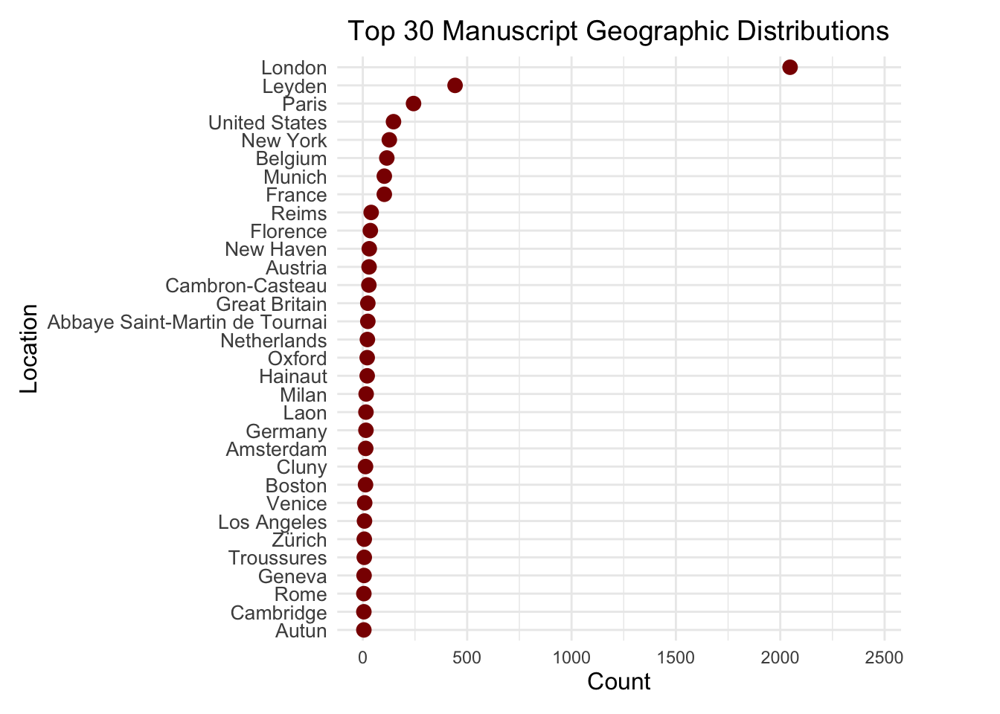

Before Duplicate Removal: All columns in the “Before Removal” plot reflect extremely high duplicate percentages with most nearing or at 100%. This tells us that our dataset had many redundant rows present, particularly when using the manuscript column as a primary identifier. Such a high level of duplication suggests that considerable redundancy is in place, which can obscure the analysis and lead to misjudgment in columns like author_name, place_label, and catalog_number.
After Duplicate Removal (Based on Manuscript): The “After Removal” plot gives an impressive improvement in the case of most of the columns. The column ‘manuscript’, now being the key column, has 0% duplicate value, which means that all the redundant rows corresponding to this key field have been removed. Other columns, such as the note column, show a sharp drop in duplication from 98.2% to 13.4%, indicating reduced redundancy in the associated data. Columns like author_name, catalog_number, and place_label retain 100% duplicates. This may indicate that these fields have a value consistent across multiple manuscripts or are inherently less variable, for example this means that one collector has more than one manuscript in their collection or for values such as height and width, as these are empty they show 100% duplicate values.
3.2 Investigating Missing Data Patterns
Code
data <-clean_names(data)data <- data |>mutate(across(everything(), as.character)) |>mutate(across(everything(), ~na_if(.x, "")))missing_summary <- data |>summarise(across(everything(), ~sum(is.na(.)))) |>pivot_longer(cols =everything(), names_to ="Column", values_to ="Missing_Count") |>mutate(Percentage = (Missing_Count /nrow(data)) *100)ggplot(missing_summary, aes(x =reorder(Column, -Percentage), y = Percentage)) +geom_bar(stat ="identity", fill ="steelblue") +geom_text(aes(label = Missing_Count),hjust =0.6,size =4,color ="black" ) +coord_flip() +labs(title ="Percentage of Missing Values by Column",x ="Columns",y ="Percentage of Missing Values" ) +theme_minimal() +theme(plot.title =element_text(hjust =0.5),axis.text.y =element_text(size =10),plot.margin =margin(t =10, r =70, b =10, l =20) )
The plot reveals key insights into the completeness of the dataset, with critical columns such as place_label, manuscript, end, and collection_label having no missing values, ensuring a solid foundation for analyzing manuscript locations and timelines. However, moderate gaps in former_owner_name, note, and con_label, indicate incomplete provenance records that may limit the depth of historical analysis. Manuscript attributes such as width_value, height_value, language, and author_name exhibit significant missing rates of 100%, reflecting gaps in data availability. These patterns underscore the importance of addressing missing data, either through imputation or exclusion, to maintain analytical integrity while highlighting opportunities for enhancing future data digitization and preservation efforts.
Code
data <- data |>select(where(~!all(is.na(.))))
3.3 Visualizing Manuscript Distribution Across Regions
Code
location_distribution <- data |>count(place_label) |>filter(!is.na(place_label)) |>arrange(desc(n))ggplot(location_distribution, aes(x = n, y =reorder(place_label, n))) +geom_point(color ="darkred", size =2) +labs(title ="Manuscript Geographic Distribution",x ="Count",y ="Location") +theme_minimal() +theme(plot.title =element_text(hjust =0.5),axis.text.y =element_text(size =8))

The Cleveland dot plot reveals a highly uneven distribution of manuscripts across locations, with a few major hubs like London and other prominent cities showing significantly higher counts, while the majority of locations have few or no manuscripts, indicating a long tail distribution and underrepresentation. Locations with the highest counts likely serve as key centers for manuscript collection, curation, or digitization, while the clustering of most locations near zero highlights potential biases in data collection or historical disparities, such as wealthier regions having more resources for preservation. The lack of mid-range clustering suggests concentration in either high-volume hubs or sparsely represented areas. The Cleveland dot plot is an effective choice for visualizing this distribution, as it avoids the clutter that would result from using a bar plot given the numerous categories.
3.4 Historical Trends in Manuscript Preservation
Code
data <- data |>mutate(end =ymd(end))manuscript_time_series <- data |>filter(!is.na(end)) |>count(end) |>arrange(end)ggplot(manuscript_time_series, aes(x = end, y = n)) +geom_line(color ="blue") +labs(title ="Manuscript Collection Over Time",x ="Year",y ="Count" ) +theme_minimal() +theme(plot.title =element_text(hjust =0.5) )
The “Manuscript Collection Over Time” plot highlights a sparse collection of manuscripts before 900 AD, suggesting limited production or poor survival from that era. Between 900 AD and 1400 AD, there is a gradual increase in manuscripts, likely due to cultural, religious, and technological advancements, with sharp peaks around 1400 AD reflecting historical surges in production or preservation driven by specific events. The frequency declines sharply after the 1400s, coinciding with the invention of the printing press, which reduced the need for handwritten manuscripts. Periodic gaps and plateaus suggest incomplete data, loss of manuscripts, or periods of low production, while preservation bias is evident, as manuscripts from later centuries are more likely to have survived and been cataloged.
3.5 Analyzing the Materials Used in Manuscripts
Code
material_counts <- data |>count(con_label, name ="count") |>arrange(desc(count))ggplot(material_counts, aes(x =reorder(con_label, -count), y = count)) +geom_bar(stat ="identity", fill ="steelblue") +theme_minimal() +labs(title ="Material Distribution (Sorted by Count)",x ="Material Type",y ="Count") +theme(axis.text.x =element_text(angle =45, hjust =1))
The Material Distribution bar plot reveals that the majority of manuscripts are made from “Parchment,” highlighting its historical dominance during the medieval period due to its durability and availability. “Paper” is the second most common material, reflecting its later adoption as a cost-effective alternative following advancements in papermaking. Materials like “Papyrus” and “Silk” are minimally represented, likely due to their limited use in specific regions, periods, or contexts, such as high-value manuscripts. A small proportion of missing values (NA) indicates incomplete data requiring further investigation. The prevalence of “Parchment” underscores its medieval significance, while the shift to “Paper” mirrors technological progress. The rare use of fragile materials like “Papyrus” and “Silk” emphasizes the need for digitization efforts to preserve these culturally significant yet vulnerable manuscripts.
3.6 Evolution of Material Usage in Manuscripts
Code
ggplot(data, aes(x = end, color = con_label)) +geom_density() +theme_minimal() +labs(title ="Timeline of Material Type Usage",x ="Year",y ="Density",color ="Material Type")
Warning: Groups with fewer than two data points have been dropped.
Warning in max(ids, na.rm = TRUE): no non-missing arguments to max; returning
-Inf
The Timeline of Material Type Usage density plot reveals the evolution of manuscript materials over time, with parchment (blue curve) dominating from the 9th century and peaking between the 12th and 15th centuries, reflecting its medieval prominence due to durability. Paper (red curve) emerges in the 13th century, peaking in the 15th century as a cheaper, more accessible alternative following papermaking advancements in Europe. Silk and papyrus (purple and green curves) show limited, sporadic use, with papyrus declining after parchment’s rise and silk being reserved for niche, high-value applications. All materials decline sharply post-15th century, coinciding with the advent of the printing press, which diminished reliance on handwritten manuscripts. The gray curve representing missing values peaks in earlier centuries, indicating data gaps or challenges in identifying material types for older manuscripts.
The bar plot “Top Manuscript Collections” highlights the prominence of major manuscript collections, with the “Phillipps Manuscripts” dominating significantly, reflecting its historical and institutional importance and extensive preservation efforts. The second-largest collection, “Catalogue of the Phillipps Manuscripts,” further underscores the Phillipps collection’s influence, while other notable collections like the “Census of Medieval and Renaissance Manuscripts” and “Corsair: the Online Catalog of Pierpont” also contribute meaningfully. A sharp decline in manuscript counts after the top few collections reveals a skewed distribution, where a few major collections hold the majority of manuscripts, while smaller collections play a lesser role. Renowned institutions like the British Library feature prominently, emphasizing their role in manuscript preservation. Abbreviated labels improve readability without compromising clarity. This centralization highlights potential biases in manuscript studies, while smaller collections present opportunities for uncovering unique and underexplored manuscripts.
The facet plot “Top 5 Collections in Top 5 Locations” compares manuscript collections across Leyden, London, New York, Paris, and the United States, revealing varying curation practices. Leyden and London are highly centralized, with the “Catalogue of the Phillipps Manuscripts” dominating Leyden (nearly 400 entries) and London (approximately 800 entries), both significantly outpacing other collections. New York’s “Census of Medieval and Renaissance Manuscripts” leads with around 50 entries but shares representation with smaller collections. Paris, led by the “Bibliothèque nationale de France,” (over 100 entries), shows a diverse manuscript distribution, while the United States, also dominated by the “Census of Medieval and Renaissance Manuscripts” catalog (around 60 entries), reflects a reliance on digital cataloging. This variation underscores the trend of manuscript collections in the top 5 countries.
Passing 93 addresses to the Nominatim single address geocoder
Query completed in: 93.7 seconds
Code
geocoded_places <- geocoded_places |>filter(!is.na(lat) &!is.na(lon))heatmap_data <- data |>filter(!is.na(place_label)) |>group_by(place_label) |>summarise(count =n()) |>inner_join(geocoded_places, by =c("place_label"="place"))world_map <-map_data("world")ggplot() +geom_polygon(data = world_map, aes(x = long, y = lat, group = group), fill ="gray85", color ="white") +geom_point(data = heatmap_data, aes(x = lon, y = lat, size = count, color = count), alpha =0.7) +scale_color_gradient(low ="yellow", high ="red", name ="Manuscript Count") +scale_size_continuous(name ="Manuscript Count") +labs(title ="Heatmap of Manuscript Locations by Counts",x ="Longitude",y ="Latitude" ) +theme_minimal() +theme(plot.title =element_text(hjust =0.5, size =14),legend.position ="right",axis.text =element_text(size =10),axis.title =element_text(size =12) )
The heatmap of manuscript locations by counts illustrates the geographic distribution of manuscript collections, with the highest concentrations observed in Europe, particularly in regions around the United Kingdom and adjacent areas, marked by intense red and orange colors. North America also shows notable manuscript holdings, primarily in the United States, although the counts are less concentrated compared to Europe. Other parts of the world display minimal representation, with scattered yellow points indicating lower manuscript counts. This pattern highlights the centralization of manuscript preservation and cataloging efforts in Western countries, likely reflecting historical, cultural, and resource-related factors that prioritize these regions.
3.10 Manuscript Production Over the Centuries
Code
library(ggplot2)library(dplyr)data <- data %>%mutate(end =as.Date(end, format ="%Y-%m-%d"))data <- data %>%mutate(year =as.numeric(format(end, "%Y")),century =floor((year -1) /100) +1)heatmap_data <- data %>%count(place_label, century) %>%filter(!is.na(place_label) &!is.na(century))top_locations <- heatmap_data %>%group_by(place_label) %>%summarise(total_count =sum(n)) %>%arrange(desc(total_count)) %>%slice_head(n =20) %>%pull(place_label)heatmap_data <- heatmap_data %>%filter(place_label %in% top_locations)ggplot(heatmap_data, aes(x = century, y =reorder(place_label, -n), fill = n)) +geom_tile(color ="white") +scale_fill_gradient(low ="lightblue", high ="darkblue", name ="Count") +labs(title ="Heatmap of Manuscripts by Location and Century",x ="Century",y ="Location" ) +theme_minimal() +theme(plot.title =element_text(hjust =0.5, size =14),axis.text.y =element_text(size =10) )
The heatmap of manuscripts by location and century reveals the temporal and geographic distribution of manuscripts, with darker shades indicating higher counts. Key locations like London, Leyden, and Paris show a consistent presence of manuscripts, especially during the 12th to 15th centuries, which aligns with the peak of manuscript production in the medieval period. Earlier centuries, particularly before the 9th century, have sparse representation, reflecting limited manuscript survival or production during those times. Locations such as New York show increased representation in later periods, likely due to modern cataloging and collection practices. This visualization highlights the central role of European locations in manuscript preservation while showcasing historical trends in manuscript production and collection efforts across different centuries.